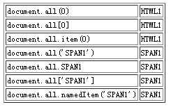
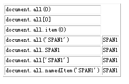
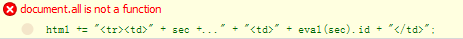

无。
document.all 在各浏览器中的支持不同。
各浏览器中对 document.all 方法的支持不同，使用它获取元素引用可能造成兼容性问题。
| 所有浏览器 |
|---|
all 方法最初是由 IE 浏览器拥有的，并不属于 W3C 规范范畴，他返回调用 all 方法的 HTML 标记自身内的所有子孙元素的 HTML 标记集合 。
all 方法的详细说明请参见 MSDN：http://msdn.microsoft.com/en-us/library/ms537434(VS.85).aspx。
通常情况下使用 document.all 方法获得文档元素内所有 HTML 标记的集合，他最先使用在 IE 浏览器中。现在其他浏览器已经支持 document.all 这个方法了，但在支持细节上有差异。
分析以下代码：
<script type="text/javascript">
window.onload = function() {
document.getElementById("info").innerHTML = "document.all : " + document.all;
}
</script>
<span id="SPAN1"></span>
<div id="info"></div>
在各浏览器中运行结果如下表：
| IE6 IE7 IE8(Q) |
document.all : [object] |
|---|---|
| Opera Safari IE8(S) |
document.all : [object HTMLColletion] |
| Firefox(Q) |
document.all : [object HTML document.all.class] |
| Firefox(S) | document.all : undefined |
| Chrome | document.all : [object HTMLColletion] |
【注】：此处需要注意 Chrome 中 document.all 方法可直接使用，但无法被检测其返回的数据类型，因而代码中返回 undefined 值。
分析以下代码：
<script type="text/javascript">
window.onload = function() {
document.getElementById("info").innerHTML = "!!document.all : " + !!document.all;
}
</script>
<span id="SPAN1"></span>
<div id="info"></div>
在各浏览器中运行结果如下表：
| IE6 IE7 IE8 | !!document.all : true |
|---|---|
| Firefox Chrome Safari Opera | !!document.all : false |
分析以下代码：
<html id="HTML1">
<script type="text/javascript">
window.onload = function() {
var html = "<table border='1' style='font-size:12px;'>";
function getElement(sec) {
html += "<tr><td>" + sec + "</td>" + "<td>" + eval(sec).id + "</td>";
}
getElement("document.all(0)");
getElement("document.all[0]");
getElement("document.all.item(0)");
getElement("document.all('SPAN1')");
getElement("document.all.SPAN1");
getElement("document.all['SPAN1']");
getElement("document.all.namedItem('SPAN1')");
html += "</table>";
document.getElementById("info").innerHTML = html;
}
</script>
<span id="SPAN1"></span>
<div id="info"></div>
</html>
在各浏览器中表现如下：
| IE6(Q) IE7(Q) IE8(Q) Chrome Safari Opera Firefox(Q) |
 |
|---|---|
| IE6(S) IE7(S) IE8(S) |  |
| Firefox(S) |  |
由于 document.all 方法存在支持程度问题，获取元素还是推荐用 W3C DOM 规范中提供的 document.getElementById、document.getElementsByTagName 等标准方法。
| 操作系统版本: | Windows 7 Ultimate build 7600 |
|---|---|
| 浏览器版本: |
IE6 IE7 IE8 Firefox 3.6.2 Opera 10.60 Chrome 5.0.375.7 dev Safari 4.0.4 |
| 测试页面: |
output_document.all.html document.all_boolean.html document.all.html |
| 本文更新时间: | 2010-07-09 |
document all getElementById getElementsByTagName